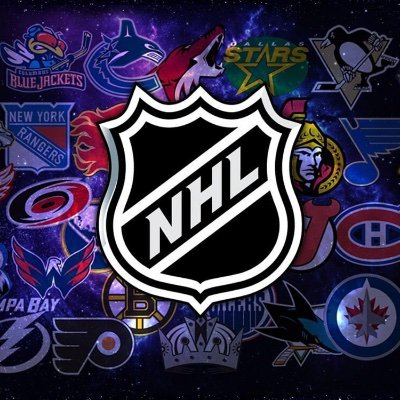

nhlwebcast.com| NHL Webcast - nhl webcast live stream
- nhlwebcast.com Schedule live
- nhlwebcast live
- nhl webcast Streams live
- nhl webcast live stream live
Welcome to nhlwebcast.com – your dedicated hub for live hockey action! Here, we bring fans closer to the ice with free, high-quality streams of the NHL, NCAA, and other major hockey leagues and tournaments. No need for expensive subscriptions or complicated sign-ups—just click, watch, and enjoy the game. Our platform is designed to make it easy for fans like you to catch every thrilling play, goal, and overtime moment, anytime and on any device. So settle in, pick your game, and let the excitement of live hockey streaming bring you closer to the sport you love. Enjoy the action on nhlwebcast.com!
What is nhlwebcast.com?
nhlwebcast.com provides high-quality, free streaming of hockey games across leagues like the NHL, NCAA, and international tournaments. This platform caters to fans by offering access without costly subscriptions or cable packages, and no sign-up is required. This accessibility aims to bring hockey action to everyone, regardless of location or budget.
Key Features of nhlwebcast.com
Comprehensive hockey Coverage
nhlwebcast.com streams a wide range of events, including NHL and NCAA games, along with other international leagues and tournaments. Its expansive coverage ensures fans can follow their favorite teams and enjoy significant matchups throughout the season, including playoffs and championships.
User-Friendly Interface
Games are organized by league for easy navigation, and major games are highlighted on the homepage for quick access. This intuitive setup helps users find desired streams without hassle, making nhlwebcast.com a go-to source for live hockey streaming.
Device Compatibility and Accessibility
nhlwebcast.com supports streaming on smartphones, tablets, desktops, and smart TVs, allowing fans to watch games on the go. This cross-device compatibility ensures uninterrupted access to live games, regardless of where viewers are located.
Stream Quality Options
nhlwebcast.com offers adjustable resolutions, allowing users to select the best quality based on their internet speed. Backup links are available if a stream becomes unavailable, ensuring reliable access to ongoing games and enhancing the overall viewing experience.
How to Use nhlwebcast.com for Live Streaming
Navigating the Platform
With nhlwebcast.com’s categorized layout, finding live streams is straightforward. Users can select their preferred league or team, and there’s no need for an account or subscription. This accessibility means fans can start streaming immediately without any obstacles.
Enhancing the Viewing Experience
nhlwebcast.com allows users to control stream quality, pause games, and replay key moments. These options provide flexibility and cater to viewers who want a customizable experience that suits their viewing preferences.
Benefits of Watching hockey on nhlwebcast.com
Cost-Free Access to High-Quality Streams
Funded by ads, nhlwebcast.com is entirely free to use, eliminating the need for subscriptions or registration fees. This makes it an excellent option for hockey fans seeking affordable streaming.
Keeping Up with Live Events
nhlwebcast.com showcases current games, allowing fans to stay updated on the latest scores and watch highlights of major events in real time. Users can choose to watch live or replay games they missed, ensuring they don’t miss any important moments.
FAQs
Is nhlwebcast.com Free?
Yes, nhlwebcast.com provides free streaming supported by advertisements, ensuring cost-free access to live hockey games.
What Leagues Can I Watch?
nhlwebcast.com streams NHL, NCAA, and other international leagues, covering a broad spectrum of hockey events.
Is nhlwebcast.com Legal?
The platform operates by linking to third-party sources. Its legal status varies by location, so users should consider regional streaming laws before accessing content.
Do I need to create an account on nhlwebcast.com?
No account or personal information is required, allowing for immediate access to live games.
Can I use nhlwebcast.com on my mobile device?
Yes, nhlwebcast.com is compatible with mobile devices, offering flexibility for fans to watch games on smartphones and tablets.
What should I do if a stream isn’t working?
Users can switch to a backup link if a stream is unavailable, ensuring a continuous viewing experience.
How does nhlwebcast.com offer free streams?
nhlwebcast.com generates revenue through advertisements, allowing users to access live games without paying any fees.
Can I stream past games on nhlwebcast.com?
While focused on live events, nhlwebcast.com may offer replays of recent games, catering to fans who missed live broadcasts.